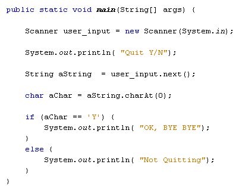

You can check to see which single character is in a particular string. The charAt method is used for this in Java. Here's some code to try:
String email_address = "meme@me.com";
char aChar = email_address.charAt( 4 );
System.out.println( aChar );
This code checks which letter as at position 4 in the email address string. The return value is a variable of type char:
char aChar = email_address.charAt( 4 );
When the above code is run, the output is the character @. The number between the round brackets of charAt is the position in the string you're trying to check. Here, we want to get at the character in position 4 of the email_address string. Again, the count starts at 0, just like substring.
One good use for charAt is for taking a letter from a string variable that is typed by a user, and then converting it to a single char variable. For example, you could ask the user to type Y to continue or an N to exit. Have a look at this code:

We can't use the Scanner class directly to get a single letter to store in a char variable. So we use the next( ) method to get the next string that the user inputs. There's a next integer, next long, next double - even a next Boolean. But there's no next char. Even if the user inputs a single character it will still be a string and not a char. (Remember: a char variable stores a Unicode number as an integer.)
We can use charAt to get a character from any string that the user inputs, even if the user inputs a single letter:
char aChar = aString.charAt( 0 );
All we're saying is "Get the character at position 0 in the string called aString, then store it in the aChar variable".
We've added an IF statement to test what is in the aChar variable. (Note the use of single quotes around the letter Y.)